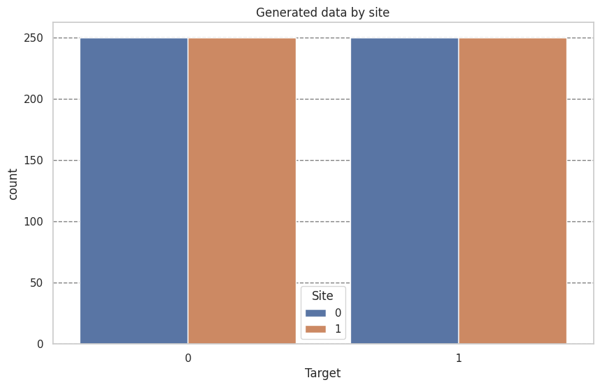
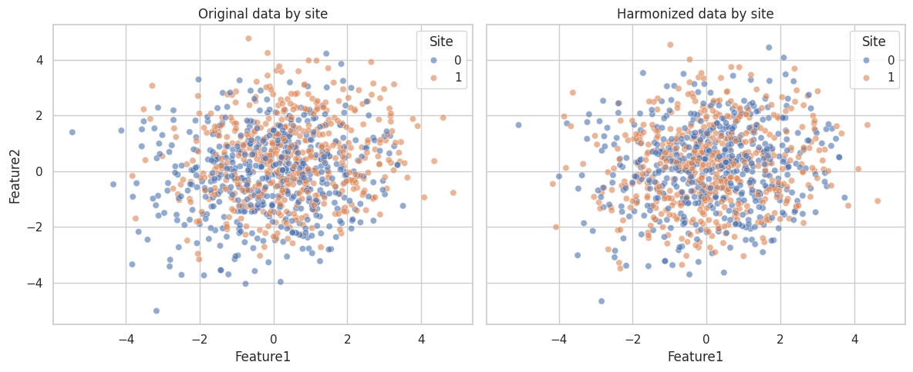
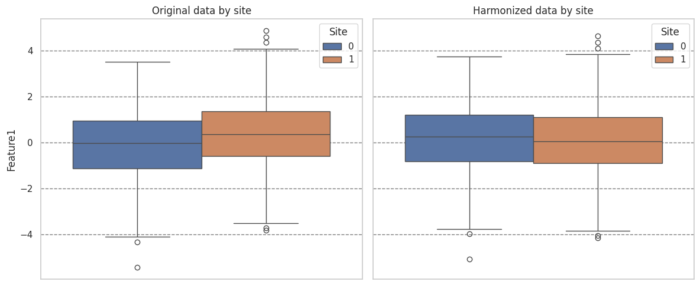
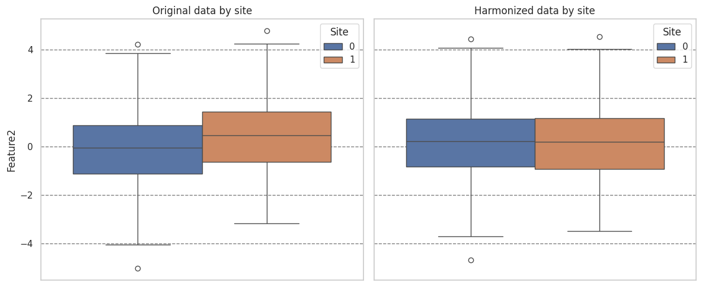

Harmonize data with neuroComBat#
Importing necesary moduls#
import matplotlib.pyplot as plt
import pandas as pd
import seaborn as sns
from uniharmony import verbosity
from uniharmony.combat import NeuroComBat
from uniharmony.datasets import make_multisite_classification
sns.set_theme(style="whitegrid")
verbosity("warning")
Generate data using unharmony function#
X, y, sites = make_multisite_classification(
n_features=2,
site_effect_strength=1,
)
df = pd.DataFrame({"Target": y, "Site": sites})
plt.figure(figsize=[10, 6])
plt.title("Generated data by site")
sns.countplot(df, x="Target", hue="Site")
plt.grid(axis="y", color="black", alpha=0.5, linestyle="--")

Let’s create a instance of the neuroCombat harmonizer#
combat = NeuroComBat()
X_harmonized = combat.fit_transform(X, sites)
df_orig = pd.DataFrame(X, columns=["Feature1", "Feature2"])
df_orig["Site"] = sites
df_orig["Phase"] = "Original"
df_harm = pd.DataFrame(X_harmonized, columns=["Feature1", "Feature2"])
df_harm["Site"] = sites
df_harm["Phase"] = "Harmonized"
fig, axes = plt.subplots(1, 2, figsize=(12, 5), sharex=True, sharey=True)
sns.scatterplot(data=df_orig, x="Feature1", y="Feature2", hue="Site", alpha=0.6, ax=axes[0])
axes[0].set_title("Original data by site")
sns.scatterplot(data=df_harm, x="Feature1", y="Feature2", hue="Site", alpha=0.6, ax=axes[1])
axes[1].set_title("Harmonized data by site")
plt.tight_layout()

fig, axes = plt.subplots(1, 2, figsize=(12, 5), sharex=True, sharey=True)
sns.boxplot(data=df_orig, y="Feature1", hue="Site", ax=axes[0])
axes[0].set_title("Original data by site")
axes[0].grid(axis="y", color="black", alpha=0.5, linestyle="--")
sns.boxplot(data=df_harm, y="Feature1", hue="Site", ax=axes[1])
axes[1].set_title("Harmonized data by site")
axes[1].grid(axis="y", color="black", alpha=0.5, linestyle="--")
plt.tight_layout()

print("Feature means by site before harmonization:")
print(df_orig["Feature1"].groupby(df_orig["Site"]).mean())
print("Feature means by site after harmonization:")
print(df_harm["Feature1"].groupby(df_harm["Site"]).mean())
Feature means by site before harmonization:
Site
0 -0.134125
1 0.410179
Name: Feature1, dtype: float64
Feature means by site after harmonization:
Site
0 0.152921
1 0.122821
Name: Feature1, dtype: float64
fig, axes = plt.subplots(1, 2, figsize=(12, 5), sharex=True, sharey=True)
sns.boxplot(data=df_orig, y="Feature2", hue="Site", ax=axes[0])
axes[0].set_title("Original data by site")
axes[0].grid(axis="y", color="black", alpha=0.5, linestyle="--")
sns.boxplot(data=df_harm, y="Feature2", hue="Site", ax=axes[1])
axes[1].set_title("Harmonized data by site")
axes[1].grid(axis="y", color="black", alpha=0.5, linestyle="--")
plt.tight_layout()

print("Feature means by site before harmonization:")
print(df_orig["Feature2"].groupby(df_orig["Site"]).mean())
print("Feature means by site after harmonization:")
print(df_harm["Feature2"].groupby(df_harm["Site"]).mean())
Feature means by site before harmonization:
Site
0 -0.131884
1 0.458163
Name: Feature2, dtype: float64
Feature means by site after harmonization:
Site
0 0.148781
1 0.177800
Name: Feature2, dtype: float64
Take Home message#
As expected, neuroComBat pushes the mean of the site distributions closer.